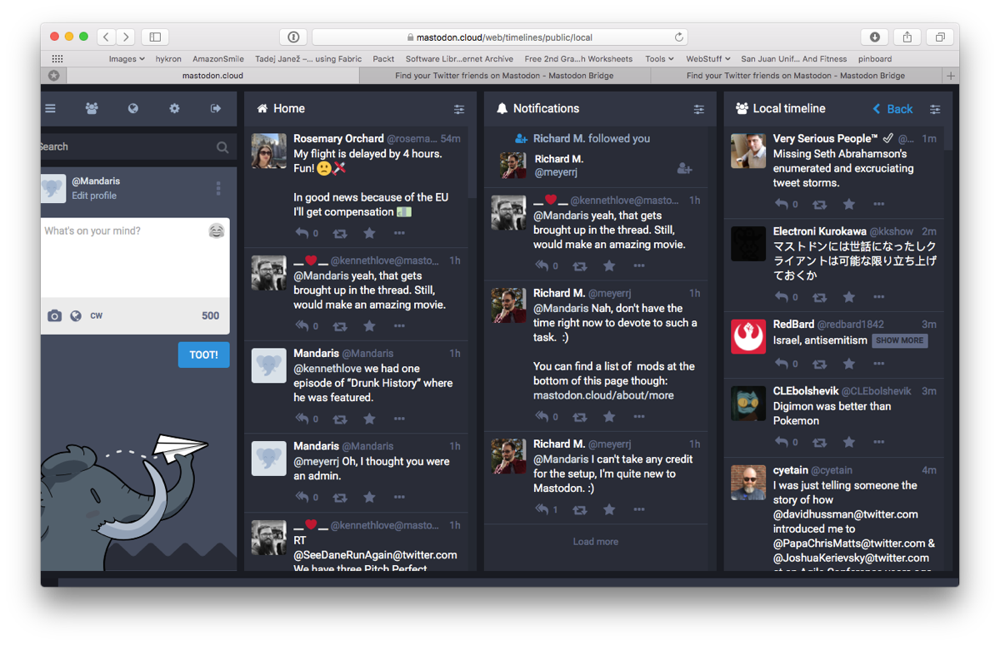

I really like that my children are going to see a Science Fiction movie. When I was a kid there weren't a lot of heroes that looked like me. Sure, there were black super heroes. But they were usually some buff side kick or characature; mostly muscle and charisma.
I like the fact that they are showing women in movies that are more than just a side character.
The first thing I did with this site this year other that work on a plugin that I'm not ready to release to the world is update the meta data. I don't know if you - the reader- will see a difference but I'm pretty proud of what I did.
The next thing is to update all the catefory tags to make them more consistent.
I've been listening to Core Intuition for years, because it was great to hear how independent developers go about making a living. When I'm sweating to make a living by working on someone else's schedule, I'd listen to how they are making ends meet while still enjoying life. I might not always agree with what they were saying but something about how they viewed themselves and their business gave me hope that you could follow your passions in life.
I had been hearing for years how many developers were having the same problems. In my mind, I thought that this was a great product that should be seen as a great reason to use the Mac.
I've identified myself with Daniel many times over the years and want him to succeed. To be the little guy who is making it.
I haven't finished the episode.
I'm afraid to.
For some reason, I feel that if I don't finish it. It won't be as bad as what the worst case scenario could be.
Last month, I saw a deal for the setup mac software subscription. I had originally signed up for it when the service started but didn’t continue with it because I was trying to save money and a lot of the applications that they were promoting were things that I had already purchased over the years. Since the deal was essentially %40 off, I thought give it a shot.
So far, I’m really enjoying that it allows me to experiment with different software. In fact, I’ve been writing on the mac power users discourse forums about it and I wanted to put those stories on my blog.
I really like the idea of SetApp, but I just feel like it came around too late. I am sure that there are gems in there that I don’t know about, but I really wish it was around before I bought Ulysses, CleanMyMac, ForkLift, etc on their own.
I really want to subscribe, but feel like it is a waste due to all the apps I already own.
Anyone else?
By Bodiequirk ( link )
I kind of feel the same way when I tried it when it first came out. There were a couple of apps that I kind of wanted to try but I couldn’t justify the cost. At the time, I already owned most of the key software that they had because of different bundles and needs that had come before that.
But then the sale came and I was able to jump on for about $70. I figured this would give me a chance to try out Ulysses and others. The funny thing is that my wife was using our mac to scan something and the software was spitting out a huge pdf. Preview has an option to make a pdf smaller but the quality is unusable. I right clicked to open it up in pdfpen, when I saw that PDF Squeezer was there.
A couple clicks and boom, I was a hero.
One of the few times she’s complemented me on spending money on software.
Link to post
I thought that the one time would be good enough to warrant subscribing for next year, but then another incident happened.
Ok, another story of how setapp has really saved my bacon and I’ve only had it for about a month.
I’ve given my wife the bad advice of just pulling her thumb drive out of the computer. Well, it just happens that this time it actually became corrupted.
She was furious.
She said -to paraphrase- “only this stuff happens on the mac!”
I know… some of you are thinking that’s grounds for a divorce.
I started to panic, I started questioning all my life choices.
I did a search using Bing! and found some links on how to fix a corrupted USB drive and most of them were to re-format. I didn’t want to take the chance that I’d lose her data, so I did a search for “drive” in the setapp library and saw “Disk Drill”.
It was able to find the files on the usb drive and I restored it to the desktop for my wife to look over.
With the release of Mohave, I no longer have a desktop computer that can run the latest version of the operating system. Part of me is sad because of the feeling of missing out and that I'm unable to afford a new computer.
Another part of me is relieved in the knowledge that I don't have to worry about my current software not being able to run, having to wait for 3rd to bring support the OS, or further fractioning of what I can and (increasingly) can not do.
I've recently purchased MacSparky's OmniFocus Field Guide, so that I can master the tool. It's my hope that the tool will allow me to structure my day. I loose track of what is important sometimes and things have a tendency to get lost either through being too busy or just straight procrastination.
When I look back at my life, the times that I'm the best is when I have a structured system. I've got a brain and I can come up with ideas, but it's pointless if I can't remember what commitments that I've made or where I'm going with them.
The more that I dive into the quest of having my own spot on the internet, the more that I find that I have things that I want to do with it. Which means more research, experiments and late nights.
Currently, I'm on a mission to get webmentions and pingback working on my site. It's been pretty slow going because I want to incorporate it into my current blogging workflow. A workflow that is currently not flowing at all1.
Anyway, I thought I'd focus on making some changes so that I can make it fit better with all the new stuff that is coming out for the indieweb.
Setting up sign in
The first thing to do is make some changes to my template to allow for sign up according to the web directions
I thought the easiest ways of doing this was to use github2 or twitter3. I pushed the github login near the top of the page so that it would look for it first.
Unfortunately, I still need to test it and get it in front of other people to use. I'm going to lay the foundation down and do some research so that I can get ping backs to work properly.
More meta data
From my reading of indieweb.org, I see that it doesn't use the OpenGraph and Schema.org that I put in the theme.
I'm hesitant to add these new tags because it lowers the validation scores, but I hope that it will help with accessibility and just make the site work better for those who want to find it.
Conclusion
I've got a lot of things on my mind and places where I can make the site move forward. I hope that those who read this feel inspired and have some input on how to make the template better.
I've got three places that I can sit down and make a blog post. My iPhone, my iMac, and my laptop. Currently, my favorite is my laptop but I don't take it everywhere or use it as much. My mind is having trouble just feeling comfortable writing recently. Add the complication of where the files should be saved and how to update previous posts and I start feeling like throwing my hands up. ↩
Which was just bought by Microsoft a couple month ago. I don't know if it's the new Microsoft which is pro open source. ↩
A lot of information on the main page of mastodon.cloud.
I joined mastodon.cloud last night because of all the drama with Twitter the in the last couple of years. I haven't been personally attacked by bots or nazi, but I don't believe that I should have to worry about something like that.
Although, I'm hesitant to join yet another social media platform when I can barely keep up with the ones that I'm in now (facebook, micro.blog, slack, and reddit), I thought it would be ok to at the very least reserve my name in case I do decide to use it.
Twitter is a broken plate that held so much potential.
Recently, there was a post in the mac power users forums about how twitter was broken with the following:
So, with the recent changes by Twitter and their impacts, does anyone think there’s a real alternative that power users will embrace? If it’s an opportunity to move to something, then who is creating the option that will take us into the next decade of microblogging?
I made a mistake of replying to a sub posting that had the following and not the main post by a user named dotty.
I don’t have an answer for you, but I will chime in. I live in Colorado and have come to rely on Twitter for fire and evacuation updates. It is by far the fastest way to get emergency updates. I have an “emergency” group that shows push notifications. All other notifications are turned off if they’re not in that group. Now that push notifications are not allowed on either Tweetbot or Twitterrific, is there another alternative?
I admit I was a little too flippant with my response. Two anxious to really think about my response before posting.
I think that this might be a good thing. Although we won’t get push notifications, the applications will still work.
If anything, this might help those who might have become to the constant notifications.
/Devil’s Advocate
This was a missed opportunity and got a response.
@mandaris , I explained I only used Twitter notifications for emergency notifications about fire and evacuations. I don’t understand how this is a “good thing” for me not to receive this information as quickly as possible. Am I misunderstanding your post? I know you signed it “devil’s advocate,” but seriously??? I sincerely doubt Twitter was trying to do us a favor by restricting their API — It sounds like it was a money decision.
I agree that some are much too attached to their phone and notifications going off every few minutes can be distracting, but that really isn’t the point of this post. There are legitimate reasons someone would want timely push notifications. There was an armed escaped convict in my neighborhood recently and the sheriffs dept put out a twitter notification to stay indoors until the person was apprehended… and then another notification giving the “all clear.” How is it a “good thing” not to receive these types of alerts if you choose to? After, I received a call from my neighbor to check in on me because there was a “reverse 911” that went to her land line and she was concerned I wouldn’t know because I don’t have a land line.
The point of my post is to figure out an alternative now that Twitter has made this decision, not to weigh the merits of notifications from Twitter. After a summer from hell with wildfires raging all around me, these notifications were a blessing. If there were no notifications, all was well, but if my home, or the home of loved ones needed evacuated from fire (or now flash flood) it was a “good thing” indeed to be alerted ASAP. It literally saved lives.
All I want to know now is if I can set up something similar or if I can still receive these notifications another way. If I can still get them and they will be delayed 1-2 minutes that is fine. I only want the notification if it is truly from my emergency list on twitter, and I can’t find a setting for this anywhere with Twitter’s own app. Am I missing something?
Very thoughtful, I took the time to write a small response that I hope doesn't erupt into a huge flame war and to appease anyone else who might come across it at a later date.
First, I’m happy that the twitter service has helped you and those you care about. Those are all very good use cases and we can all see why Jack Dorsey would state that twitter would drive to be a daily utility.
But that is the thing, something like that should be a utility that our phones should be able to tap into. For example, I live in California and we have something called an Amber Alert. You get alerts without the need for an account. You can get alerts on your phone, billboards and radio.
As a society, we should be making sure that services such as this are expanded to handle use cases as you have described them.
Now, as far as the question of how to use the twitter app to get you what you want. I don’t know if they have a “vip” notification group on the roadmap. I would hope that they discover it needs to be there since they wrote:
We’re committed to understanding why people hire 3rd party clients over our own apps.
Probably not my greatest moment on the internet but I'm hoping that I communicated my thoughts well. And just in case, I had sent a private message stating that and Doty responded that
Well, I purchased the update for ScreeFlow 8 based off of my fear of missing out on new features and the dream that I'll one day make something with it.
I'm trying to change my habits with my computer and thought that I would focus on making things instead.
So, here is the first video that I've made in a very long time. I hope that they get better with practice.